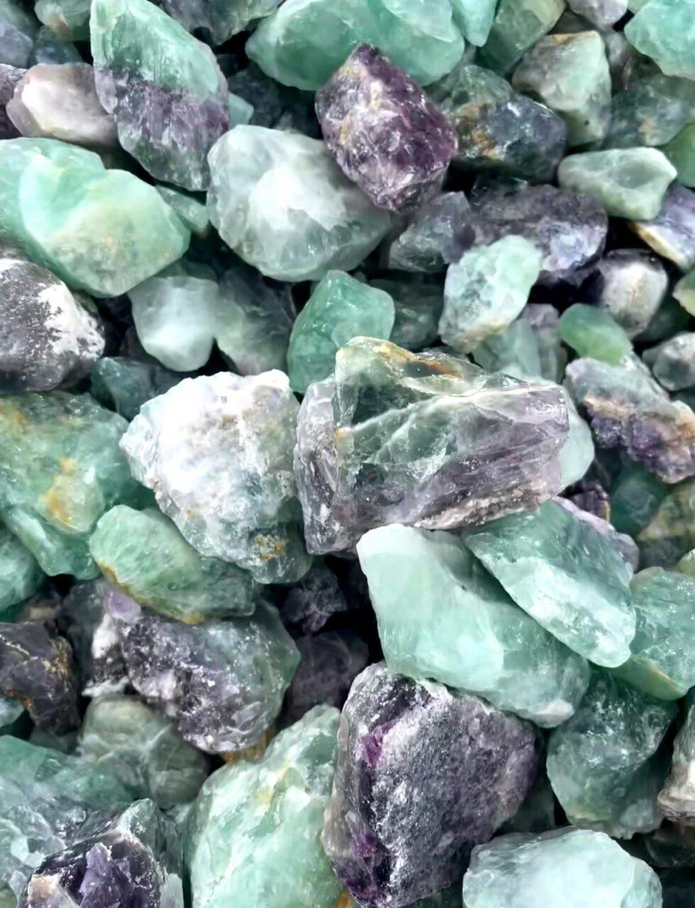
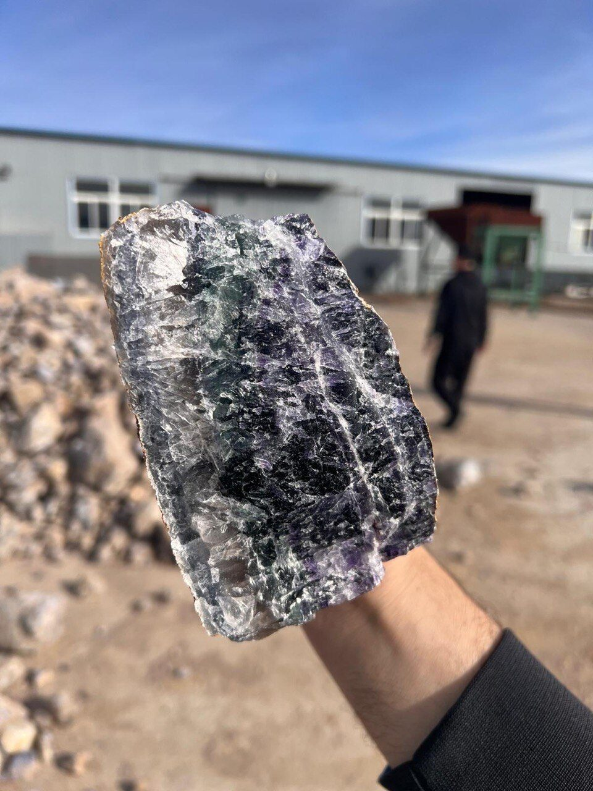
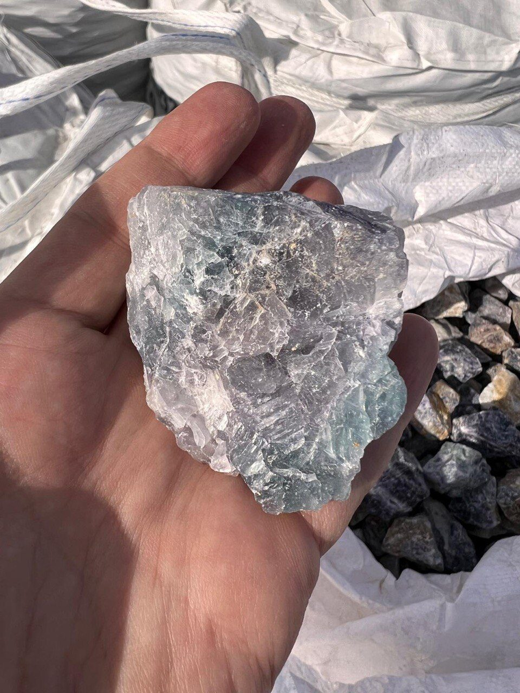
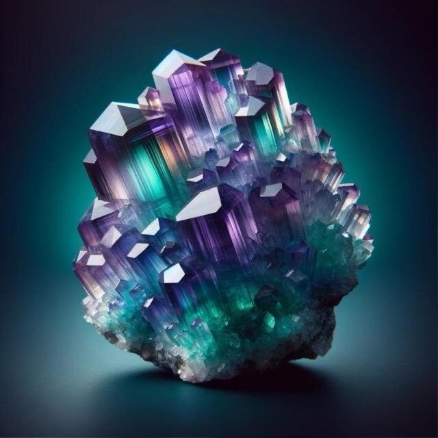
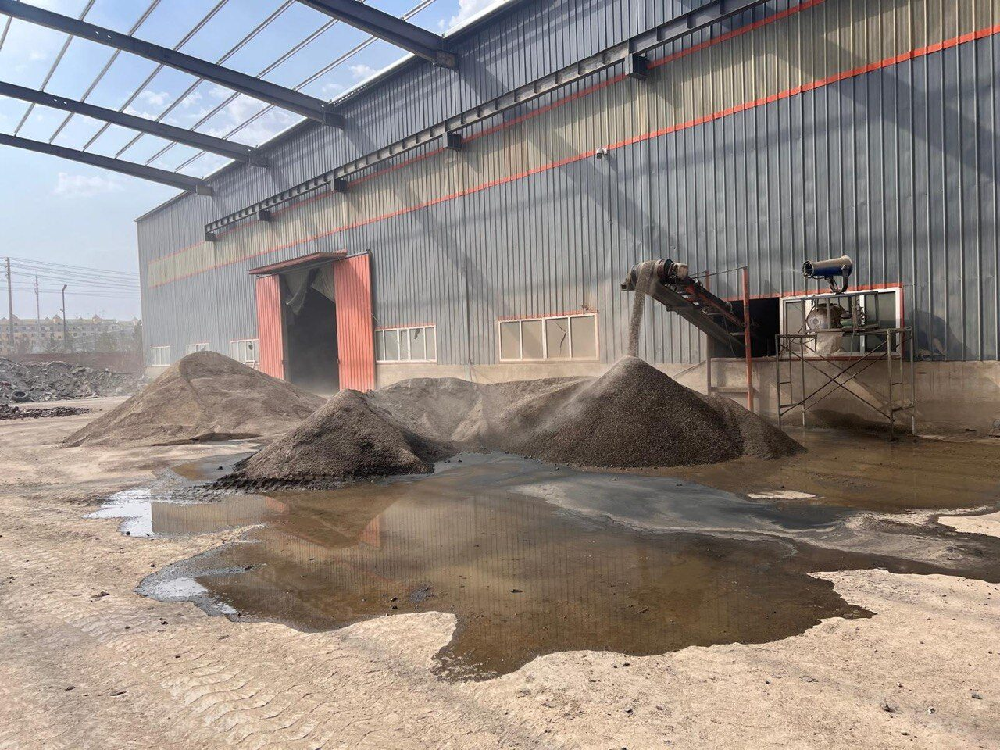

◆
Fluorspar — 90 to 99.5% CaF₂
Metallurgical and sub-acid grade fluorspar sourced directly from trusted mines.

ITAKA General Trading Co. L.L.C
Your trusted partner for critical energy minerals from Mongolia & Kazakhstan — high-grade Fluorspar and Rare Earth Elements.
Welcome to ITAKA General Trading Co. We are a Dubai-based commodity trading company and mining consultant specializing in high-grade critical minerals from Central Asia. With trusted partners and producers across Mongolia & Kazakhstan, we have carved out a niche as a reliable source for high-grade Fluorspar and Rare Earth Elements.
We support international clients in sourcing high-grade minerals and in identifying new resource deposit opportunities for investment. Partner with us and experience reliable service and quality products for your critical energy mineral needs.
We support you in any service related to natural resources, energy and mining — and we hold a portfolio of mining projects ready for investment in Mongolia & Kazakhstan.
Metallurgical and sub-acid grade fluorspar sourced directly from trusted mines.
High-purity acid-grade fluorspar for the chemical and battery supply chain.
Rare Earth Element projects ready for investment and offtake.
Mining advisory, due diligence and deposit evaluation services.
Fluorspar is a key ingredient in the manufacture of aluminium and steel, and an essential component of the fluorine industry. Its significance has only increased with the rise of the EV revolution. We offer fluorspar in various grades so clients have access to the exact specifications they require.
Sourced directly from our trusted mines in Mongolia & Kazakhstan, our high-grade raw fluorspar is a testament to the rich mineral wealth of the region. With its high purity, it serves as a versatile raw material across industries.

Used primarily in steel production, Met-Spar adds efficiency to the steelmaking process as a flux to remove impurities. Our Met-Spar is meticulously sourced and rigorously tested to meet the high standards our clients expect.

With its high purity, Acid-Spar is a critical ingredient in the chemical industry, particularly in the production of hydrofluoric acid. Sourced from reliable mines and held to strict quality control to guarantee a minimum of 97% CaF₂.


Our experienced logistics team, with over 12 years in the mining and transportation industries, prioritizes safety and sustainability across every stage of our operations.
ITAKA's mission is to bridge the gap between Central Asian producers and global buyers, ensuring a steady supply of critical energy minerals. Against the backdrop of the EV revolution and rising demand for minerals such as fluorspar and rare earth elements, we connect buyers with trusted partners and negotiate fair contract terms that benefit all parties involved.
These are the cornerstones of ITAKA. Our products are not just minerals — they are a promise of quality and a commitment to meeting our clients' needs. We source responsibly, test thoroughly and deliver efficiently.
On-the-ground partners and producers across Mongolia & Kazakhstan.
A Dubai trading base connecting Central Asian supply to global markets.
A commitment to sustainable and responsible mining practices.
Interested in our fluorspar or rare earth products? Get in touch for detailed specifications and quotes.